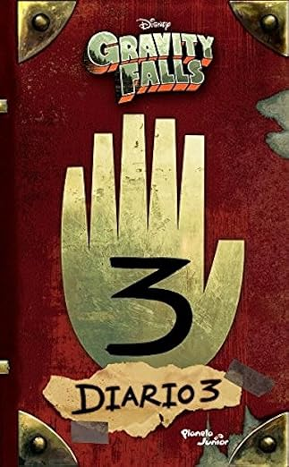

Basketball
Desde hace tiempo he visto diferentes juegos de la NBA, especialmente los más antiguos, donde participaron leyendas del baloncesto como Michael Jordan. Actualmente, mi principal inspiración para practicar este deporte es Stephen Curry.
Desde hace tiempo he visto diferentes juegos de la NBA, especialmente los más antiguos, donde participaron leyendas del baloncesto como Michael Jordan. Actualmente, mi principal inspiración para practicar este deporte es Stephen Curry.
Me gusta ejercitarme para mantener un cuerpo sano y estar físicamente activo. Aunque disfruto mucho de este pasatiempo, reconozco que requiere bastante esfuerzo, por lo que procuro hacerlo con el objetivo de mantenerme saludable y no tomarlo de manera demasiado competitiva.
Me gusta escuchar a The Weeknd, ya que tiene álbumes que puedo repetir una y otra vez sin aburrirme. Además, cuenta con la canción con más reproducciones en streaming: Blinding Lights.
Me gusta la serie Gravity Falls porque es única. Me encanta todo lo relacionado con misterios, y lo que más me atrae es que al final de sus capítulos incluía mensajes ocultos que invitaban a investigar y descubrir más sobre la trama.

El Libro de Bill relata todo lo que le sucedió a Bill después de los eventos de la serie. Un pequeño spoiler es que, aunque todos creían que Bill ya no existía, lo que no saben es que Axolotl se apiadó de él… y ahora está en proceso de una posible reencarnación… ¿o tal vez no?
El Diario 3 es sumamente interesante. En él descubrimos qué sucedió con Stanford Pines y encontramos información detallada sobre los monstruos, además de páginas inéditas que nunca aparecieron en la serie. Es un libro que responde muchas incógnitas y que, para mí, es muy especial. Lo recomiendo absolutamente.
Me gusta investigar sobre el hardware de las computadoras y las nuevas tecnologías emergentes, tanto de procesadores como de tarjetas gráficas. Además, disfruto probar e indagar en diferentes sistemas operativos para entender su funcionamiento y características.